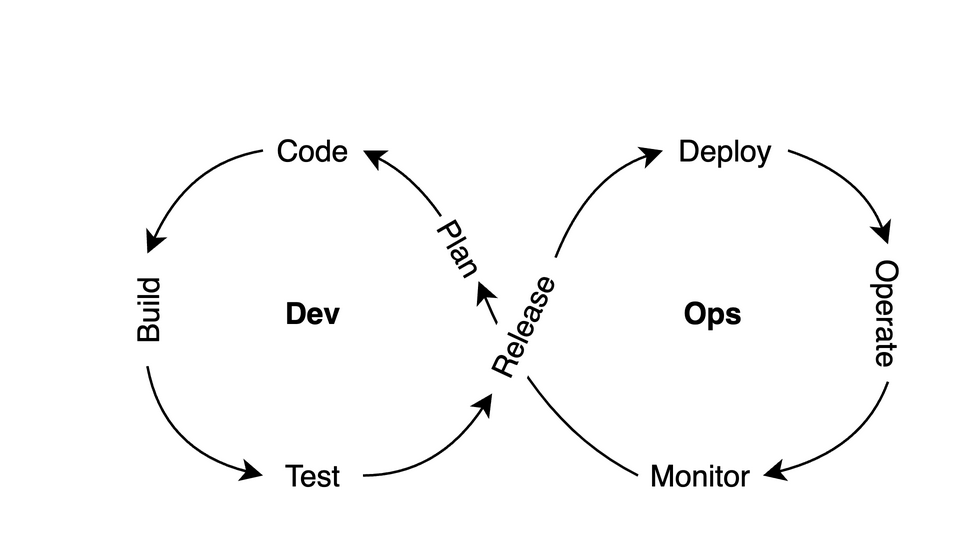
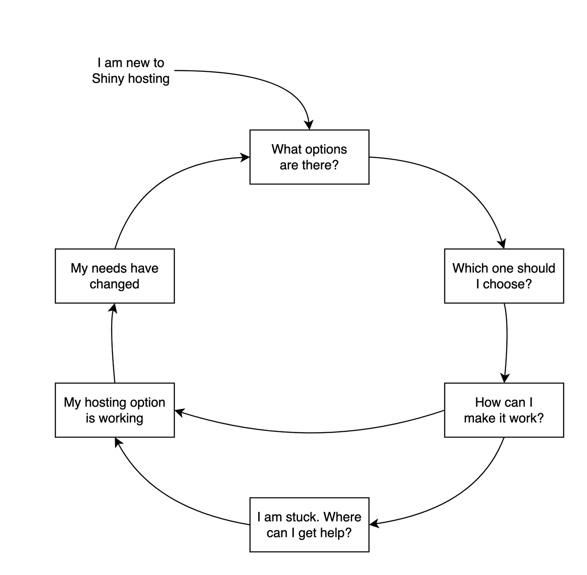

Chapter 1 Background
This chapter introduces the concept of data applications and presents Shiny as a powerful framework for their development. We delve into the concept of application development and hosting, exploring how both concepts fit within the development operations (DevOps) cycle. Furthermore, we introduce the concept of a hosting cycle, inspired by the DevOps cycle, to illustrate the iterative nature of hosting your Shiny application.
As a data professional working with R or Python, you likely have a workflow that involves loading and transforming data, exploring and visualizing it, running analyses, and summarizing findings in reports.
You can send these reports, or even the data and reproducible code to others. However, the data sent might be large, the code might be confidential, or the recipients of the code and data might not be technically inclined. Furthermore, changes to code might be continuously made, requiring you to send constant updates of the code. Which leads to the question: wouldn’t it be easier to deliver your findings as interactive documents or web applications?
In this chapter, you will discover what Shiny can offer when it comes to data-intensive web applications which avoid the pitfalls of sending code and data. You will also become familiar with the workflow of developing and operating such web applications.
1.1 Data-intensive Apps
Data-intensive applications, or data apps for short, are modern web applications that are centered around operations on data. This is different from traditional websites that focus on providing information for a user. The primary goal of data apps is to make data-intensive operations approachable. For non-technical users, this might mean simplifying a sophisticated/complex task like processing a CSV data file to a PDF report. For technical users, it can offer an intuitive understanding of complex relationships through interactive visualization, or it can help in institutionalizing the workflows that are incorporated in the apps.
The steps involved in simplifying data-intensive operations resemble more traditional workflows used by analysts through the command line:
- Data import (files, databases)
- Data transformation (extract–transform–load; ETL)
- Summarizing the data (descriptive statistics)
- Visualization and exploratory data analysis (EDA)
- Repeating these steps for different subsets or slices of the data (interactive and reactive)
- Saving, storing, or exporting these results (files, databases)
Because these apps allow users to interact with the data, these apps share some similarities with desktop software applications, like Excel. But unlike desktop applications, data apps are accessed through the browser. This is advantageous as your application is able to run on any device that has a web browser like a desktop, tablet, or phone.
There is also a distinction between our definition of data apps and general-purpose analytics tools, like Microsoft PowerBI or Tableau. Such tools are primarily used for exploratory purposes, whereas data apps are custom built and capable of answering questions in a lot more depth. This is possible because of the analytics capabilities of R and Python libraries that can be called upon in real time. In other words, data apps can be exploratory and explanatory at the same time.
Building data apps from the ground up can be time consuming. Especially when you would like to integrate interactivity into your application. Frameworks such as Shiny enable the rapid development of interactive data apps by abstracting some of the code needed to implement interactive functionality.
1.2 Enter Shiny
If your analytics workflow is built using R or Python,
Shiny is the easiest way to create data science related web applications.
Shiny can also power dynamic documents. As advertised by the shiny R
package description (Chang et al. 2024):
[Shiny] Makes it incredibly easy to build interactive web applications with R. Automatic “reactive” binding between inputs and outputs and extensive prebuilt widgets make it possible to build beautiful, responsive, and powerful applications with minimal effort.
In other words, you can turn your data and scripts into a web application with limited web development skills. Shiny lets you to create a web app without knowing HTML, JavaScript and CSS. All that is necessary is some familiarity with R or Python coding. But more importantly, it will also let you include reactivity and interactivity, so your users can dynamically explore the results by changing parameters through a user interface.
Reactivity is the defining feature of Shiny, setting it apart from similar web application frameworks, like Streamlit, which is primarily used in Python. Reactivity is responsible for re-executing parts of the code when things change as the result of users interacting with the app. This is possible through reactive bindings between inputs and outputs. This means that only the necessary parts of code are re-executed to update the user interface, making Shiny more efficient than applications that re-run the entire code to update a user interface.
The apps are also interactive, meaning that users can actively engage with the page by clicking, typing into inputs, and triggering various actions. Unlike reactivity, where changes are driven by updates in the backend running R or Python code, interactivity focuses on user-driven actions and changes on the client side (i.e. in your browser). Think of popups, hover labels, transitions, and animations. These behaviors are usually powered by the front-end JavaScript code.
The third feature mentioned in the Shiny R package description is responsiveness. It refers to the styling of the rendered web application. Again, client-side JavaScript and CSS code used by the Shiny user interface is responsible for the app responding to various device sizes (desktop, tablet, phone), or viewports (resizing the window). Size responsive systems allow the web page to respond to changes according to well thought-out rules without the interface elements falling apart.
Shiny for R and Python offers a new paradigm for developing interactive data intensive apps by providing a framework that includes reactivity for efficiency, interactivity and responsiveness to engage end users. In Python, a comparable option for building reactive web apps is Dash and Streamlit. However, no similar alternatives exist for R.
1.3 Application Development
Application development begins with an idea of what you would like your app to do. In a first iteration, you will have a proof-of-concept version of the app that will likely have bugs and need more refinement. It might take several iterations of fixing bugs and incorporating feedback from the users until the data app reaches its final form. Even after that, you might have to update the data behind the app, integrate the latest technologies, and provide security updates for users. While you may not make major changes to the app itself, you will release new versions with minor updates from time to time.
This also means that you might want to test your changes before releasing the new version to your users. App development is usually based on accumulating small changes, continuously testing these changes, and releasing these changes to the users at a predetermined cadence, depending on the criticality of the changes made to the app. You might not wait too long with a security update. However, new features might get released monthly or yearly.
If you are using Shiny, you are participating in application development. Shiny is a web application framework helps with the application development process. As a framework, it abstracts most of the complicated code needed for user interfaces, leaving you more time to focus on developing data features for your data app. Shiny is integral in simplifying the application development process for data-intensive apps.
1.4 Application Hosting
Once you’ve developed your Shiny application, you might be wondering how you can share the application to your colleagues or a wider audience. This is where the concept of application hosting comes in.
Hosting an app includes operations required for successfully and securely running the app online, so that the users of the app get access to it without interruption. It starts with deploying the application. Deployment refers to the process of transferring files from one system to a hosting server, which is then refreshed to display a new version of the app. This can be done manually by a person or automated process.
After deployment, you might want to monitor app usage – tracking metrics such as the number of active users, when users access the app, and how long users engage with the app. It’s important to also monitor resource usage on the hosting server, including CPU, memory, and disk space. Having visibility into the system performance and application level logs will be critical in case something goes wrong.
All these requirements need some up-front investment in learning about and setting up the systems that you will host your app with. After the investment spent on app development and setup, operating costs will be determined by the kind of setup and hosting that is required for delivering the value to your users. Keeping in mind that the user experience is significantly influenced by the performance of the servers hosting the app, as computations with Shiny happen server-side – i.e. on a remote computer independent of a client’s local device.
Other requirements that are less important include the client’s machine specifications. Data apps are expected to run on desktops, laptops, tablets, and phones via a web browser. This is good news for app developers because data apps can be written in different programming languages and still can result in a comparable user experience. One might prefer Python or R, others might use JavaScript. The end result will be very similar: a data app running in the browser.
This book will help you gain a better understanding of how to host your Shiny applications walking you through different solutions that can best fit your requirements.
1.5 The DevOps Cycle
DevOps is an important part of application development and hosting. DevOps is a set of practices and tools that integrates and in most cases automates the work of software development (Dev) and information technology (IT) operations (Ops).
The Dev side is concerned with building a better app, while the Ops side is concerned with providing the best infrastructure to run the app on. DevOps therefore refers to the collaboration culture between the people on both sides to make this process as smooth as possible through the use of monitoring and logging to identify and quickly resolve issues. Figure 1.1 shows the of DevOps cycle as it is often visualized, capturing the development and operations that we described in the previous subsections.

Figure 1.1: The DevOps cycle.
DevOps is also often associated with Continuous Integration and Continuous Deployment (CI/CD). CI/CD practices ensure the reliable delivery of frequent code changes. It emphasizes the use of automation to reduce human error. You can view DevOps and CI/CD as two sides of the same coin. CI/CD is pro-active, and tries to eliminate sources of errors through automation. DevOps is a broader framework that codifies reactive practices when we notice deviations from the plan.
Figure 1.1 might suggest that DevOps is a never ending cycle, and that changes can only originate from within the cycle. All of those steps are under the control of the development and operations teams. But in reality, we can imagine many factors that can perturb the ideal system from the outside. These would be factors that we cannot or do not want to control. This is when things do not go according to plan.
For example, being hacked is never a pleasant experience. Whether it’s paying a ransom to access your data, dealing with hijacked servers sending spam emails, or unwanted Bitcoin mining, none of it is anyone’s idea of fun. While you may not be hacked, cloud providers hosting your application can experience outages. These are all events that we can prepare for, but remain beyond control.
Other events throwing the DevOps cycle off the plan might be more benign. Having too many users is often considered a good kind of problem. But unexpected surges in usage might lead to unresponsive servers. Adequate monitoring and alerting can prevent these unfortunate events from happening. But at some point, the team might be faced with a decision. How can we support more users? How can we improve user experience by reducing loading time of the apps?
Adapting to changing needs and circumstances often leads to changes in the way how the application is hosted. Changes can be incremental, like needing more CPU or memory for the server. Or it can be more drastic, for example, moving from a hosting platform to self hosting on your own cloud server.
The DevOps cycle illustrates how the development and deployment of an application is iterative. Our book presents the hosting of Shiny applications in a similar fashion that we coin as the hosting cycle described in the next section.
1.6 The Hosting Cycle
The hosting cycle is inspired by the DevOps cycle. It is meant to illustrate how the hosting of your Shiny application might take many iterations. Let’s give an example. You have a Shiny app that you’d like to deploy. You have read the documentation on the Shiny website and now you are thinking:
Posit Connect is pricy, Shiny Server has no licensing fee, and both require self hosting on my own server or in the cloud. I don’t know how to do that. So I will go with shinyapps.io. It is free to start with, I can deploy my app with a click of a button from my RStudio Desktop.
shinyapps.io definitely seems like the best option when starting out. It is free for the first five apps (with limited hours of app usage). You host your app in a cloud platform, i.e. on someone else’s server, that is fully managed. This means less headache for you. You sign up to shinyapps.io, you click the deploy button in RStudio Desktop, and a few minutes later your app opens up in the browser.
Let’s take a look at Figure 1.2 that illustrates the cycle of evaluating the Shiny hosting options from time to time. In our example above, we assumed that you are new to Shiny hosting. You did some research, you made your choice based on some criteria, e.g. pricing (free) and operational complexity (managed hosting with push button publishing).
Now you are at a stage where the option that you picked is working just fine. This could be the end of the story for hosting your Shiny apps. But more often than not, questions will pop into your head as time goes by.
- I have many active users and I am running out of free app hours on shinyapps.io.
- I want to host more than 5 apps.
- I want my custom domain with HTTPS.
- I need better performance and more memory.
- I need specialized software libraries installed.
- I need fine grained access control to my apps.
Should you upgrade your shinyapps.io subscription? Should you set up your own server and try Shiny Server? Should you convince your boss to foot the bill and buy Posit Connect for your team? There could also be other options out there.
This is where the contents of this book will help you make a decision. Your answer might depend on many factors, or your needs might evolve over time. Having an understanding of what it takes to go with certain hosting options will provide the foundation for that.

Figure 1.2: Shiny hosting cycle.
Reading this book and trying some of the examples yourself will help you to build confidence when it comes to evaluating your Shiny hosting needs and options the next time you arrive at a crossroad.
1.7 Summary
We presented a very broad overview on how the need for a data-intensive application might arise, and why Shiny might be the right tool for the job. Of course, you might have your own reasons for picking Shiny, along unique circumstances and needs. However, DevOps principles will likely still apply when developing your own application, and the hosting related considerations listed in Section 1.6 will still be relevant to you too. Our goal with this book is to equip you with the knowledge to make informed decisions about hosting your Shiny applications.
In the next chapter, we will review important concepts that you might already be familiar with or at least heard about those concepts. It is very important to have a working knowledge of these concepts because as you browse the web or read more advanced materials, you will run into these words without much explanation. Shiny simplifies web technology for data professionals, but those web technologies sit under the hood of Shiny’s abstraction layer. Hosting directly interfaces with these fundamentals, so understanding those concepts will help you a lot.